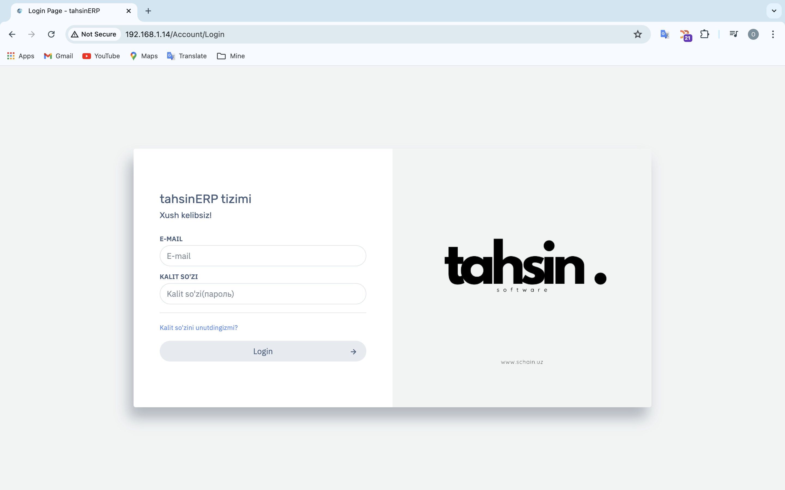
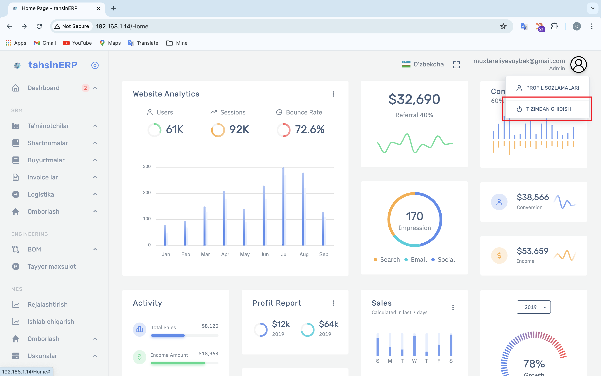

tahsinERP bilan ishlash bo'yicha yo'riqnoma
# 1. tahsinERP ga foydalanuvchilar qanday kiradi ?

Ushbu sahifada foydalanuvchi o'z Email va Kalit so'zi(parol) orqali kirishi mumkin.
Email va Kalit so'zi(parol) to'g'ri kiritilishi shart
Agarda Kalit so'zi(parol)ni unutgan bo'lsangiz yoki biror muammo bo'lsa:
Kalit so'zini unutdingizmi?
orqali Admin ga murojaat qilishingiz mumkin.
# 2. tahsinERP bilan ishlash
# 2.1 Profil sozlamalari

Profil sozlamalariga chap tomondagi menyu ning pastki qismida joylashgan
Akkount sozlamalari
tugmasini bosih orqali yoki,
o'ng yuqori qismdagi "email" ni bosganingizda chiqadigan munyulardan
Akkount sozlamalari
tugmasini bosih orqali kirishingiz mumkin.

Ushbu oynadan siz
Profil rasmingizni,
Foydalanuvchi nomingizni,
F.I.SHingizni,
Emailingizni
va
Parolingizni o'zgartirishingiz mumkin.
O'zgartirishlarni saqlash uchun hozirgi amaldagi parol kiritishingiz so'raladi.
# 2.2 Profildan chiqish

Profildan chiqish uchun, yuqorida ko'rsatilganidek, "Email" tugmasini bosganda chiqadigan
Tizimdan chiqish
tugmasini bosish orqali chiqish mumkin.